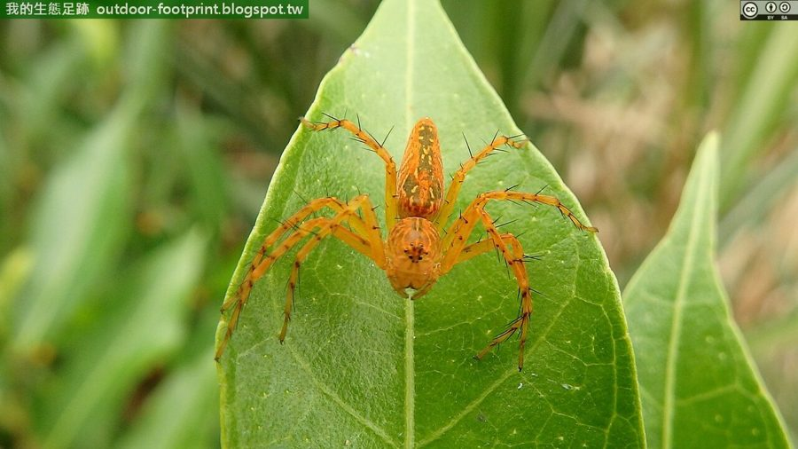

हाइरोग्लिफिक लिंक्स मकड़ीHieroglyphic Lynx Spider
Hamadruas hieroglyphica · Oxyopidae · SPD-0038

- Scientific name वैज्ञानिक नाम
- Hamadruas hieroglyphica (Thorell, 1887)
- Family कुल
- Oxyopidae
- Hindi हिंदी
- हाइरोग्लिफिक लिंक्स मकड़ी
- Local names स्थानीय नाम
- hieroglyphic lynx spider, shikari makdi, hieroglyphic makdi
- Status here यहाँ की स्थिति
- native
- Movement आवागमन
- Resident, here all year
- Known from कहाँ दर्ज
- Others have published records from the wider Awadh–Purvanchal plain, none yet from Basti–Ayodhya अवध–पूर्वांचल से दूसरों के प्रकाशित अभिलेख, बस्ती–अयोध्या से अभी नहीं
- IUCN IUCN
- not evaluated
- Review समीक्षा
- not yet reviewed
When to look कब देखें
Present all year. साल भर मौजूद।
Uses and possibilities उपयोग और संभावनाएँ
Drawn from the documented uses in the profile below, where each is labelled traditional, current or a research lead. All uses →
Tell it apart from इनसे अलग पहचानें
हाइरोग्लिफिक लिंक्स मकड़ी / Hieroglyphic Lynx Spider
Hamadruas hieroglyphica (Thorell, 1887) — Oxyopidae
हाइरोग्लिफिक लिंक्स मकड़ी — झाड़ियों, फसलों, बागों और लंबे पौधों के पत्तों पर पाई जाने वाली एक अत्यंत तेज, फुर्तीली और कांटेदार पैरों वाली शिकारी देशी मकड़ी है। यह लिंक्स मकड़ी परिवार (Oxyopidae) की सदस्य है और शिकार पकड़ने के लिए कोई जाला नहीं बनाती, बल्कि जंगली बिल्ली (लिंक्स) की तरह पत्तों के बीच चुपचाप घात लगाकर बैठती है और शिकार के पास आते ही उस पर झपट पड़ती है। इसके लंबे पैरों पर कड़े, खड़े कांटे लगे होते हैं जो शिकार को जकड़ने में मदद करते हैं। इसके सिर और पेट पर काले-भूरे रंग के बारीक, जटिल निशान बने होते हैं जो प्राचीन मिस्र की लिपि (हाइरोग्लिफिक्स) जैसे दिखते हैं। यह फसलों पर लगने वाले हानिकारक कीटों और इल्लियों को खाकर कृषि में प्राकृतिक संतुलन बनाए रखती है।
Quick Identification त्वरित पहचान
| Feature | Description |
|---|---|
| Female Size | Body length up to 12 mm (Deeleman-Reinhold 2009) |
| Male Size | Body length up to 9 mm (Deeleman-Reinhold 2009) |
| Eye Pattern | Eight eyes arranged in a characteristic compact hexagon on an elevated head (Thorell 1887) |
| Legs | Long, slender, armed with prominent, stiff, erect dark spines (Sebastian & Peter 2009) |
| Coloration | Pale yellowish-brown or greenish-ochre adorned with complex dark hieroglyphic lines (Thorell 1887) |
| Body Shape | Cephalothorax high, sloping steeply; abdomen elongated and tapering posteriorly to spinnerets |
| Hunting Style | Agile cursorial predator; stalks and pounces actively on foliage without a capture web |
Field tip: Look among flowering shrubs, pulse crops, or orchard leaves. A pale yellowish-brown spider with a high head, hexagonal eye cluster, long spiky legs, and intricate dark script-like markings on its body, resting alertly on a leaf without a web, is Hamadruas hieroglyphica.
हिंदी: यह पीले-भूरे रंग की फुर्तीली मकड़ी है जिसके लंबे पैरों पर नुकीले कांटे निकले होते हैं। सिर पर आंखें षट्भुज (हेक्सागोन) के आकार में सजी होती हैं और शरीर पर लिपि जैसे बारीक काले निशान होते हैं। यह जाला नहीं बनाती बल्कि पत्तों पर दौड़कर शिकार करती है।
Morphology आकारिकी
Measurements as given in the handbooks (Thorell 1887; Deeleman-Reinhold 2009; Sebastian & Peter 2009):
| Measurement | Value | Source |
|---|---|---|
| Female body length | up to 12 mm | Deeleman-Reinhold (2009) |
| Male body length | up to 9 mm | Deeleman-Reinhold (2009) |
| Eye cluster | Compact hexagon on elevated ocular area | Thorell (1887) |
| Leg spination | Prominent erect spines on femora, tibiae, and metatarsi | Sebastian & Peter (2009) |
The cephalothorax is high, vertically elevated anteriorly in the eye region, and slopes sharply down to the posterior margin (Thorell 1887). The eight eyes are arranged in four distinct transverse rows forming a compact, regular hexagon characteristic of the family Oxyopidae: anterior median eyes are small, posterior lateral and median eyes are large, granting a nearly 360-degree field of vision. The chelicerae are long, vertical, and marked anteriorly with dark longitudinal streaks. The abdomen is elongate, cylindrical-conical, and gradually tapers to a sharp point at the spinnerets (Deeleman-Reinhold 2009). The dorsal scutum is decorated with intricate dark brown or black branched lines and chevrons resembling ancient hieroglyphic characters.
The walking legs are notably long, slender, and pale straw-yellow with dark annulations at the joints. They are covered with long, stiff, black spines set perpendicular to the leg shafts, which form a spiny catching basket when grasping prey (Sebastian & Peter 2009). Males are slightly smaller, more slender, with longer legs and enlarged palpal bulbs.
हिंदी: इसका सिर ऊंचा और आगे से उठा हुआ होता है जिस पर आंखें एक षट्भुज के रूप में सजी होती हैं। पेट पीछे की ओर पतला और नुकीला होता है जिस पर काले रंग के बारीक रेखाचित्र बने होते हैं। इसके पैरों पर खड़े कांटे शिकार को मजबूती से पकड़ने के लिए एक पिंजरे जैसा काम करते हैं।
Behaviour & Ecology व्यवहार और पारिस्थितिकी
The Hieroglyphic Lynx Spider is a highly agile, free-ranging hunter that inhabits the canopy and shrub layers of agricultural and woodland habitats. It is primarily diurnal, though it remains active during warm humid twilights.
Unlike web-spinning spiders, Hamadruas hieroglyphica roams actively over plant foliage. It uses its acute hexagonal vision to detect prey movements up to a foot away. When an insect lands on a nearby leaf, the spider stalks forward with cat-like stealth, pauses, and executes an explosive leap across stems, grabbing the victim with its spiny legs. It anchors a safety dragline before jumping, allowing it to swing safely if it misses its target. During nighttime hours or rainstorms, it rests flat along the underside of a leaf, keeping its legs tucked closely alongside its body.
हिंदी: यह मकड़ी पत्तों पर तेजी से दौड़ने और छलांग लगाने में माहिर होती है। यह बिल्ली की तरह दबे पांव शिकार के पास जाती है और अचानक कूदकर अपने कांटेदार पैरों में दबा लेती है। कूदने से पहले यह रेशम का लंगर लगाती है ताकि गिरे नहीं। रात में यह पत्तों के नीचे छिपकर आराम करती है।
Life Cycle / Phenology जीवन चक्र
Seasonal phenology in northern Indian plains across the agricultural year:
| Season / Month | Stage | Field Observation |
|---|---|---|
| March–May (Summer / Zaid) | Active nymphal growth | Immatures hunt small insect pests on irrigated summer crops |
| June–July (Monsoon onset) | Maturation & courtship | Adults reach full size; males perform visual leg-tapping displays |
| August–September (Kharif peak) | Egg guarding on foliage | Females guard pale green silk egg sacs anchored to leaves |
| October–November (Post-monsoon) | Spiderling dispersal | Newly hatched spiderlings emerge and disperse across field crops |
| December–February (Rabi winter) | Sub-adult overwintering | Juveniles shelter in dense grass tussocks and leaf litter during winter cold |
Breeding takes place during the warm monsoon months from June to September. Males approach receptive females with cautious leg-vibrations and visual signals to prevent aggressive feeding responses. Following copulation, the female spins a tough, flat, disc-like egg sac of greenish-white silk, firmly tied with anchor threads to the upper surface of a sheltered leaf. She perches directly over the egg sac, refusing food and defending the clutch aggressively against predatory ants and parasitoid wasps. The spiderlings hatch after several days, remain clustered around their mother through their first molt, and disperse across foliage.
हिंदी: बरसात के समय नर और मादा का मिलन होता है। मादा पत्ते के ऊपर रेशम का एक गोल और मजबूत अंडा-कोश बनाती है और खुद उसके ऊपर बैठकर अंडों की रखवाली करती है। वह बच्चों के निकलने तक किसी को भी अपने अंडों के पास नहीं आने देती।
Diet and Feeding Behaviour आहार
Hamadruas hieroglyphica is an active predatory carnivore feeding on a wide spectrum of plant-dwelling insects:
Natural prey items:
- Lepidopteran larvae and newly emerged moths resting on crop foliage.
- Hemipterans, including stink bugs, plant bugs, leafhoppers, and aphids.
- Dipteran flies, flower flies, and mosquitoes.
- Small grasshopper nymphs, crickets, and occasional small beetles.
हिंदी: यह एक मांसाहारी मकड़ी है। यह फसलों को नुकसान पहुंचाने वाली इल्लियों (कैटरपिलर), छोटे पतंगों, मक्खियों, मच्छरों, पत्तियों के रस चूसने वाले कीड़ों और छोटे टिड्डों का शिकार करती है।
Predators / Natural Enemies शत्रु
Documented natural predators in northern Indian agricultural and scrub landscapes:
- Foliage-gleaning birds: Active insectivores like Oriental Magpie-Robin, Black Drongo, and Common Myna readily snatch lynx spiders from leaves.
- Hunting wasps: Pompilid and sphecid spider wasps like Mud Dauber Wasp hunt and paralyze lynx spiders to provision larval cells.
- Predatory insects: Praying mantids, assassin bugs, and larger wandering spiders.
- Garden lizards: Tree-climbing agamid lizards (Calotes versicolor) hunting along crop hedges.
हिंदी: दहियर, कोतवाल, मैना, मड डॉबर वास्प (कुम्हारी ततैया), शिकारी कीड़े और गिरगिट इस मकड़ी का शिकार करते हैं।
Agricultural / Human Relevance कृषि प्रासंगिकता
Major biological pest control agent: Lynx spiders are recognized as among the most important native biocontrol predators in Asian agriculture. Because Hamadruas hieroglyphica hunts actively within the crop canopy without requiring webs that collect dust or damage leaves, it constantly consumes pest caterpillars, bollworms, aphids, and jassids in cotton, pulse, and vegetable fields.
Completely harmless to humans: This spider is shy, non-aggressive, and possesses venom adapted solely for immobilizing tiny insect prey. It poses zero danger to humans, livestock, or household pets.
Traditional: A familiar sight to rural farmers, known as the quick hunting spider (shikari makdi).
Today: Emphasized in organic farming and IPM protocols as an indicator of healthy agroecosystem function.
Research direction (a lead, not a result): Assessing the functional response of Hamadruas hieroglyphica to lepidopteran caterpillar outbreaks in eastern Uttar Pradesh pulse crops.
हिंदी: यह किसानों के लिए एक बहुत महत्वपूर्ण मित्र कीट है जो फसलों पर लगने वाली इल्लियों और रस चूसने वाले कीड़ों को बड़ी संख्या में खाती है। यह इंसानों के लिए पूरी तरह हानिरहित और सुरक्षित है।
Expected Locally स्थानीय रूप से अपेक्षित
Not a field record. Written from published accounts for eastern Uttar Pradesh. No confirmed local sighting yet — if you have seen it, that is what the atlas needs.
अभी तक स्थानीय पुष्टि नहीं। यह विवरण प्रकाशित स्रोतों से है, किसी अवलोकन से नहीं।
The Hieroglyphic Lynx Spider is expected across eastern Uttar Pradesh in agricultural fields, vegetable gardens, fruit orchards, and scrubby roadside verges. Look on the foliage of flowering shrubs, pulses, and crop leaves from March through October. GBIF holds published records from the wider Awadh–Purvanchal plain, none yet from Basti–Ayodhya. A voucher photograph showing the hexagonal eye arrangement, spiky legs, and hieroglyphic body markings, submitted via the About page, would confirm the first local documentation for the project area.
Distribution वितरण
Global range: Widespread across South and Southeast Asia, natively occurring in India, Myanmar, Thailand, Malaysia, and Indonesia (World Spider Catalog 2025).
In India: Recorded throughout northern and eastern states, including Assam, West Bengal, Bihar, and Uttar Pradesh (Caleb & Sankaran 2025).
In Uttar Pradesh: Documented from agricultural research stations, orchards, and rural scrublands across the Gangetic plain.
In Basti district / eastern UP: Expected as a resident native species in agricultural crop fields, village gardens, and orchard belts.
हिंदी: यह भारत, म्यांमार और दक्षिण-पूर्व एशिया में पाई जाती है। उत्तर प्रदेश में यह खेतों, बागों और झाड़ीदार इलाकों में सामान्य रूप से उपस्थित है।
Research Questions शोध प्रश्न
- What is the daily predation rate of Hamadruas hieroglyphica on economically damaging caterpillar pests in pulse crops? / दालों की फसलों में यह मकड़ी प्रतिदिन कितनी हानिकारक इल्लियों का शिकार करती है?
- How does the presence of erect leg spines enhance prey retention when capturing large, fluttering moths?
- How effectively does female egg-guarding behavior prevent parasitism by scelionid wasps under field conditions? / क्या मादा द्वारा अंडों की रखवाली करने से परजीवी ततैया से उनकी सुरक्षा होती है?
- How do extreme summer daytime heatwaves affect the hunting mobility and water conservation of this species?
- What are the specific visual triggers that stimulate predatory leaps compared to defensive evasive drops?
Similar Species मिलती-जुलती प्रजातियाँ
| Species | Key Differences | |
|---|---|---|
| Hamadruas hieroglyphica (Hieroglyphic Lynx Spider) | Body pale yellowish-brown with dark hieroglyphic markings; legs with long erect spines; body up to 12 mm (Deeleman-Reinhold 2009) | |
| Peucetia viridana ([[green_lynx_spider\ | Green Lynx Spider]]) | Body bright apple-green with red spots and yellow chevrons; cephalothorax green (Sebastian & Peter 2009) |
| Oxyopes javanus (Javanese Lynx Spider) | Body smaller, slender; carapace marked with distinct broad brown longitudinal bands (Sebastian & Peter 2009) | |
| Thyene imperialis ([[imperial_jumping_spider\ | Imperial Jumping Spider]]) | Eyes arranged in three rows (4-2-2), not a hexagon; legs lack long erect spines; jumping spider body plan (Sebastian & Peter 2009) |
Field rule: A pale yellowish-brown foliage spider with a hexagonal eye pattern, long spiky legs, intricate script-like dark lines on its body, and agile leaping locomotion without a web, is Hamadruas hieroglyphica.
हिंदी: हरी लिंक्स मकड़ी का रंग चमकीला सेब जैसा हरा होता है, जबकि हाइरोग्लिफिक लिंक्स मकड़ी का रंग हल्का पीला-भूरा होता है जिस पर लिपि जैसे बारीक काले निशान होते हैं।
Taxonomy & Classification वर्गीकरण
Original description. Described by Tamerlan Thorell in 1887 as Oxyopes hieroglyphicus in Annali del Museo Civico di Storia Naturale di Genova, volume 25, page 332. Type locality: Bhamo, Myanmar.
Subspecies. Monotypic — no subspecies are currently recognized across its range.
Family and order placement. Order Araneae, suborder Araneomorphae, family Oxyopidae. The genus Hamadruas Deeleman-Reinhold, 2009, was erected to accommodate specialized Asian lynx spiders with distinctive genital and somatic structures.
Phylogenetic notes. Formerly placed in Oxyopes, modern taxonomic revisions place this species in Hamadruas based on unique male palpal morphology and female epigynal architecture (World Spider Catalog 2025).
IUCN status rationale. Not evaluated (NE) on the global IUCN Red List of Threatened Species. It maintains widespread, abundant populations across South and Southeast Asian agroecosystems.
हिंदी: इसका वैज्ञानिक नाम Hamadruas hieroglyphica है और यह Oxyopidae (लिंक्स मकड़ियों) परिवार की सदस्य है।
Photo Gallery फोटो गैलरी
No photos yet — add field photos to media/species/hieroglyphic_lynx_spider/ and run node scripts/sync_photos.js.
Photos needed आवश्यक फोटो
- [ ] Dorsal view of adult female showing hieroglyphic markings on abdomen (शरीर पर बने लिपि जैसे निशानों की तस्वीर)
- [ ] Frontal close-up showing hexagonal eye cluster and long vertical chelicerae (षट्भुज आंखों और जबड़ों का क्लोज़-अप)
- [ ] Profile view showing long spiky legs grasping a captured insect (कांटेदार पैरों में शिकार पकड़े हुए दृश्य)
- [ ] Female guarding her pale green egg sac on a leaf (पत्ते पर अंडों की रखवाली करती मादा)
References संदर्भ
- Thorell, T. (1887). Viaggio di L. Fea in Birmania e regioni vicine. II. Primo saggio sui ragni birmani. Annali del Museo Civico di Storia Naturale di Genova, 25: 5–417.
- Deeleman-Reinhold, C. L. (2009). Description of the lynx spiders of a canopy fogging project in northern Borneo (Araneae: Oxyopidae), with description of a new genus and six new species of Hamadruas. Zoologische Mededelingen, 83(17): 673–700.
- Sebastian, P. A. & Peter, K. V. (2009). Spiders of India. Universities Press, Hyderabad, pp. 250–252.
- Caleb, J. T. D. & Sankaran, P. M. (2025). Araneae of India. Version 2025. Online checklist.
- World Spider Catalog (2025). World Spider Catalog, Version 26.0. Natural History Museum Bern.
- GBIF Occurrence Data — Hamadruas hieroglyphica, India (2025).
Source file: species/fauna/spiders/hieroglyphic_lynx_spider.md